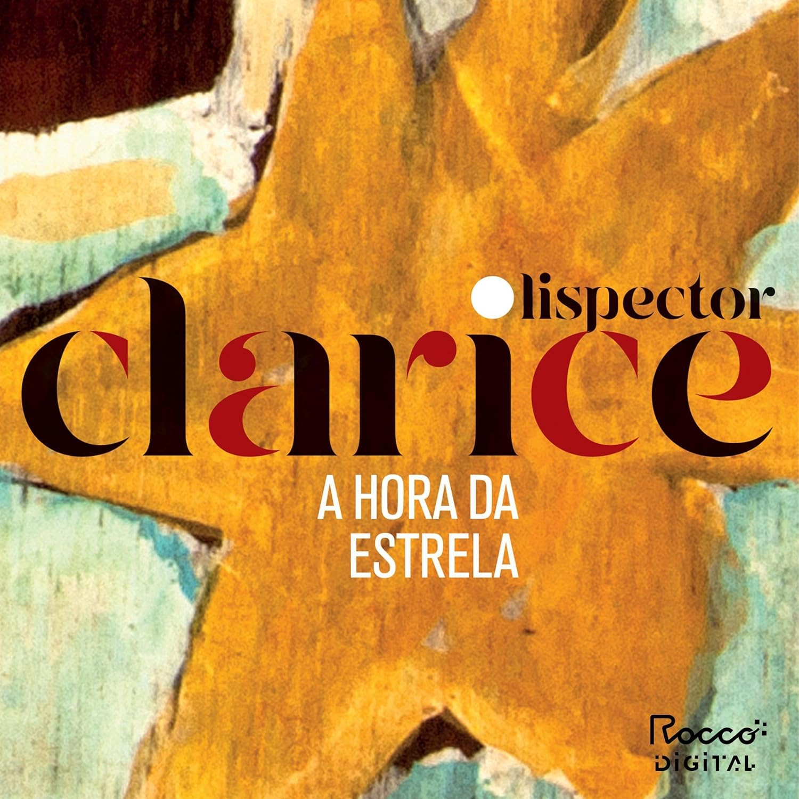

A nordestina Macabéa, a protagonista de A hora da estrela, é uma mulher miserável, que mal tem consciência de existir. Depois de perder seu único elo com o mundo, uma velha tia, ela viaja para o Rio, onde aluga um quarto, se emprega como datilógrafa e gasta suas horas ouvindo a Rádio Relógio. Apaixona-se, então, por Olímpico de Jesus, um metalúrgico nordestino, que logo a trai com uma colega de trabalho. Desesperada, Macabéa consulta uma cartomante, que lhe prevê um futuro luminoso, bem diferente do que a espera.
"Que se há de fazer com a verdade de que todo mundo é um pouco triste e um pouco só."
Pouco antes de morrer, em 1977, Clarice Lispector decide se afastar da inflexão intimista que caracteriza sua escrita para desafiar a realidade. O resultado desse salto na extroversão é A hora da estrela, o livro mais surpreendente que escreveu. Se desde Perto do coração selvagem, seu romance de estreia, Clarice estava de corpo inteiro, todo o tempo, no centro de seus relatos, agora a cena é ocupada por personagens que em nada se parecem com ela.
Título
A Hora da Estrela
Autora
Clarice Lispector
Publicação
1977
Editora
José Olympio
Gênero
Romance
Páginas
88